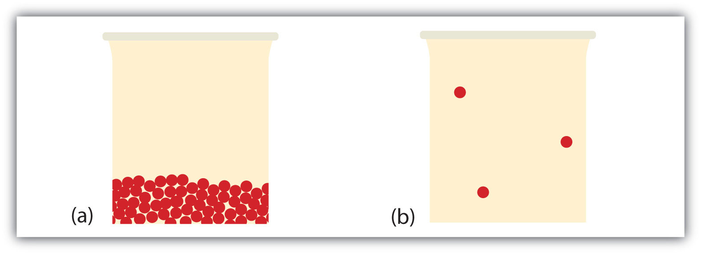

Substances can change phase—often because of a temperature change. At low temperatures, most substances are solid; as the temperature increases, they become liquid; at higher temperatures still, they become gaseous.
The process of a solid becoming a liquid is called meltingThe process of a solid becoming a liquid. (an older term that you may see sometimes is fusion). The opposite process, a liquid becoming a solid, is called solidificationThe process of a liquid becoming a solid.. For any pure substance, the temperature at which melting occurs—known as the melting pointThe characteristic temperature at which a solid becomes a liquid.—is a characteristic of that substance. It requires energy for a solid to melt into a liquid. Every pure substance has a certain amount of energy it needs to change from a solid to a liquid. This amount is called the enthalpy of fusion (or heat of fusion)The amount of energy needed to change from a solid to a liquid or from a liquid to a solid. of the substance, represented as ΔHfus. Some ΔHfus values are listed in Table 10.2 "Enthalpies of Fusion for Various Substances"; it is assumed that these values are for the melting point of the substance. Note that the unit of ΔHfus is kilojoules per mole, so we need to know the quantity of material to know how much energy is involved. The ΔHfus is always tabulated as a positive number. However, it can be used for both the melting and the solidification processes as long as you keep in mind that melting is always endothermic (so ΔH will be positive), while solidification is always exothermic (so ΔH will be negative).
Table 10.2 Enthalpies of Fusion for Various Substances
| Substance (Melting Point) | ΔHfus (kJ/mol) |
|---|---|
| Water (0°C) | 6.01 |
| Aluminum (660°C) | 10.7 |
| Benzene (5.5°C) | 9.95 |
| Ethanol (−114.3°C) | 5.02 |
| Mercury (−38.8°C) | 2.29 |
What is the energy change when 45.7 g of H2O melt at 0°C?
Solution
The ΔHfus of H2O is 6.01 kJ/mol. However, our quantity is given in units of grams, not moles, so the first step is to convert grams to moles using the molar mass of H2O, which is 18.0 g/mol. Then we can use ΔHfus as a conversion factor. Because the substance is melting, the process is endothermic, so the energy change will have a positive sign.
Without a sign, the number is assumed to be positive.
Test Yourself
What is the energy change when 108 g of C6H6 freeze at 5.5°C?
Answer
−13.8 kJ
During melting, energy goes exclusively to changing the phase of a substance; it does not go into changing the temperature of a substance. Hence melting is an isothermalA process that does not change the temperature. process because a substance stays at the same temperature. Only when all of a substance is melted does any additional energy go to changing its temperature.
What happens when a solid becomes a liquid? In a solid, individual particles are stuck in place because the intermolecular forces cannot be overcome by the energy of the particles. When more energy is supplied (e.g., by raising the temperature), there comes a point at which the particles have enough energy to move around but not enough energy to separate. This is the liquid phase: particles are still in contact but are able to move around each other. This explains why liquids can assume the shape of their containers: the particles move around and, under the influence of gravity, fill the lowest volume possible (unless the liquid is in a zero-gravity environment—see Figure 10.3 "Liquids and Gravity").
The phase change between a liquid and a gas has some similarities to the phase change between a solid and a liquid. At a certain temperature, the particles in a liquid have enough energy to become a gas. The process of a liquid becoming a gas is called boiling (or vaporization)The process of a liquid becoming a gas., while the process of a gas becoming a liquid is called condensationThe process of a gas becoming a liquid.. However, unlike the solid/liquid conversion process, the liquid/gas conversion process is noticeably affected by the surrounding pressure on the liquid because gases are strongly affected by pressure. This means that the temperature at which a liquid becomes a gas, the boiling pointThe characteristic temperature at which a liquid becomes a gas., can change with surrounding pressure. Therefore, we define the normal boiling pointThe characteristic temperature at which a liquid becomes a gas when the surrounding pressure is exactly 1 atm. as the temperature at which a liquid changes to a gas when the surrounding pressure is exactly 1 atm, or 760 torr. Unless otherwise specified, it is assumed that a boiling point is for 1 atm of pressure.
Like the solid/liquid phase change, the liquid/gas phase change involves energy. The amount of energy required to convert a liquid to a gas is called the enthalpy of vaporizationThe amount of energy needed to change from a liquid to a gas or from a gas to a liquid. (or heat of vaporization), represented as ΔHvap. Some ΔHvap values are listed in Table 10.3 "Enthalpies of Vaporization for Various Substances"; it is assumed that these values are for the normal boiling point temperature of the substance, which is also given in the table. The unit for ΔHvap is also kilojoules per mole, so we need to know the quantity of material to know how much energy is involved. The ΔHvap is also always tabulated as a positive number. It can be used for both the boiling and the condensation processes as long as you keep in mind that boiling is always endothermic (so ΔH will be positive), while condensation is always exothermic (so ΔH will be negative).
Table 10.3 Enthalpies of Vaporization for Various Substances
| Substance (Normal Boiling Point) | ΔHvap (kJ/mol) |
|---|---|
| Water (100°C) | 40.68 |
| Bromine (59.5°C) | 15.4 |
| Benzene (80.1°C) | 30.8 |
| Ethanol (78.3°C) | 38.6 |
| Mercury (357°C) | 59.23 |
What is the energy change when 66.7 g of Br2(g) condense to a liquid at 59.5°C?
Solution
The ΔHvap of Br2 is 15.4 kJ/mol. Even though this is a condensation process, we can still use the numerical value of ΔHvap as long as we realize that we must take energy out, so the ΔH value will be negative. To determine the magnitude of the energy change, we must first convert the amount of Br2 to moles. Then we can use ΔHvap as a conversion factor.
Because the process is exothermic, the actual value will be negative: ΔH = −6.43 kJ.
Test Yourself
What is the energy change when 822 g of C2H5OH(ℓ) boil at its normal boiling point of 78.3°C?
Answer
689 kJ
As with melting, the energy in boiling goes exclusively to changing the phase of a substance; it does not go into changing the temperature of a substance. So boiling is also an isothermal process. Only when all of a substance has boiled does any additional energy go to changing its temperature.
What happens when a liquid becomes a gas? We have already established that a liquid is composed of particles in contact with each other. When a liquid becomes a gas, the particles separate from each other, with each particle going its own way in space. This is how gases tend to fill their containers. Indeed, in the gas phase most of the volume is empty space; only about 1/1,000th of the volume is actually taken up by matter (Figure 10.4 "Liquids and Gases"). It is this property of gases that explains why they can be compressed, a fact that is considered in Chapter 6 "Gases".
Figure 10.4 Liquids and Gases
In (a), the particles are a liquid; the particles are in contact but are also able to move around each other. In (b), the particles are a gas, and most of the volume is actually empty space. The particles are not to scale; in reality, the dots representing the particles would be about 1/100th the size as depicted.
Under some circumstances, the solid phase can transition directly to the gas phase without going through a liquid phase, and a gas can directly become a solid. The solid-to-gas change is called sublimationThe process of a solid becoming a gas., while the reverse process is called depositionThe process of a gas becoming a solid.. Sublimation is isothermal, like the other phase changes. There is a measurable energy change during sublimation; this energy change is called the enthalpy of sublimationThe amount of energy needed to change from a solid to a gas or from a gas to a solid., represented as ΔHsub. The relationship between the ΔHsub and the other enthalpy changes is as follows:
ΔHsub = ΔHfus + ΔHvapAs such, ΔHsub is not always tabulated because it can be simply calculated from ΔHfus and ΔHvap.
There are several common examples of sublimation. A well-known product—dry ice—is actually solid CO2. Dry ice is dry because it sublimes, with the solid bypassing the liquid phase and going straight to the gas phase. The sublimation occurs at temperature of −77°C, so it must be handled with caution. If you have ever noticed that ice cubes in a freezer tend to get smaller over time, it is because the solid water is very slowly subliming. “Freezer burn” isn’t actually a burn; it occurs when certain foods, such as meats, slowly lose solid water content because of sublimation. The food is still good but looks unappetizing. Reducing the temperature of a freezer will slow the sublimation of solid water.
Chemical equations can be used to represent a phase change. In such cases, it is crucial to use phase labels on the substances. For example, the chemical equation for the melting of ice to make liquid water is as follows:
H2O(s) → H2O(ℓ)No chemical change is taking place; however, a physical change is taking place.
What is the difference between melting and solidification?
What is the difference between boiling and condensation?
Describe the molecular changes when a solid becomes a liquid.
Describe the molecular changes when a liquid becomes a gas.
What is the energy change when 78.0 g of Hg melt at −38.8°C?
What is the energy change when 30.8 g of Al solidify at 660°C?
What is the energy change when 111 g of Br2 boil at 59.5°C?
What is the energy change when 98.6 g of H2O condense at 100°C?
Each of the following statements is incorrect. Rewrite them so they are correct.
Each of the following statements is incorrect. Rewrite them so they are correct.
Write the chemical equation for the melting of elemental sodium.
Write the chemical equation for the solidification of benzene (C6H6).
Write the chemical equation for the sublimation of CO2.
Write the chemical equation for the boiling of propanol (C3H7OH).
What is the ΔHsub of H2O? (Hint: see Table 10.2 "Enthalpies of Fusion for Various Substances" and Table 10.3 "Enthalpies of Vaporization for Various Substances".)
The ΔHsub of I2 is 60.46 kJ/mol, while its ΔHvap is 41.71 kJ/mol. What is the ΔHfus of I2?
Melting is the phase change from a solid to a liquid, whereas solidification is the phase change from a liquid to a solid.
The molecules have enough energy to move about each other but not enough to completely separate from each other.
890 J
10.7 kJ
Na(s) → Na(ℓ)
CO2(s) → CO2(g)
46.69 kJ/mol